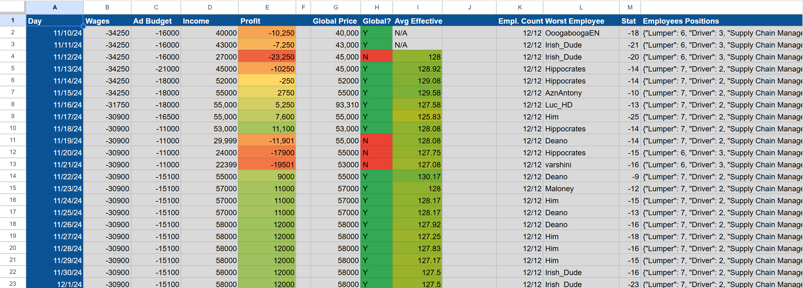

Project Overview
- Engineered an automated daily data ingestion pipeline using Python and AWS Lambda to track over 300 player run companies in the MMORPG Torn over a 19 month period.
- Treated a complex video game economy as a live data science problem, analyzing strategies from actual human competitors rather than made up test data.
- Applied statistical modeling to reverse engineer hidden game mechanics and calculate the exact mathematical ideal for workforce efficiency ratios.
Technologies Used
- Python
- AWS Lambda
- Torn API
GitHub Repository
Details
Torn is a massive browser based MMORPG that I've been playing for 8~ years with a surprisingly complex player driven economy. In the game, players can run their own companies where they hire other players as employees and compete against human directors for market share.
The catch is that the exact mechanics dictating company efficiency and profitability are intentionally kept opaque by the developers. I thought it'd be a fun challenge to aggressively optimize my in-game business, so I decided to treat the whole mechanic as a live data science problem. I built a Python script that hooks into Torn's API to pull daily operational metrics from over 300 competing companies. To make sure I never missed a snapshot, I deployed the pipeline on AWS Lambda, which automatically grabbed and stored the data every single day from November 2024 to June 2026.
